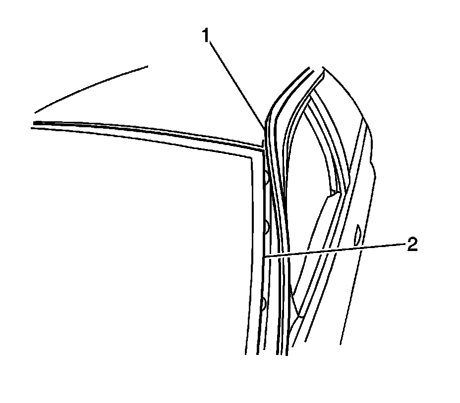
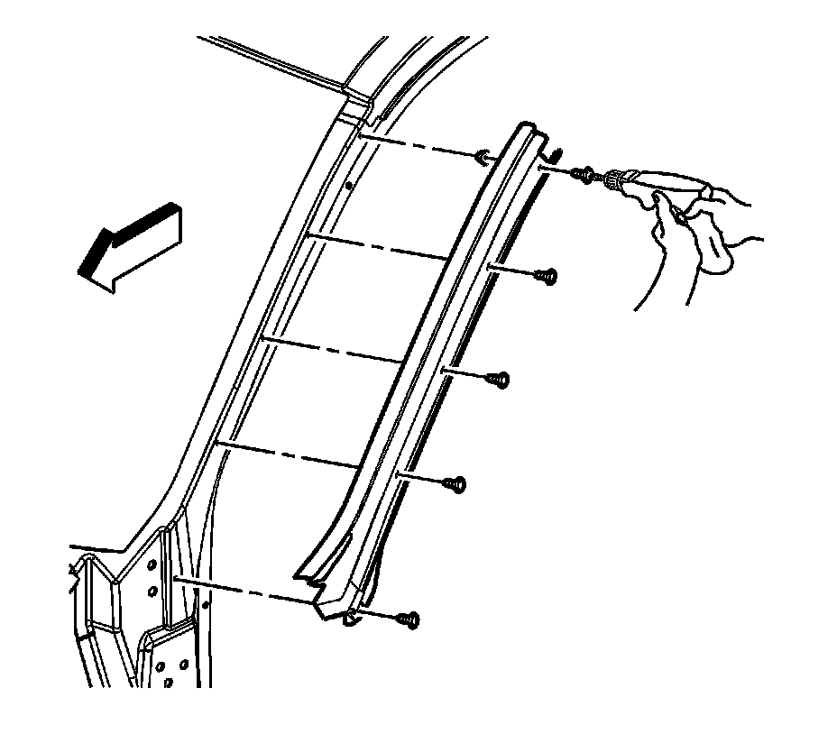
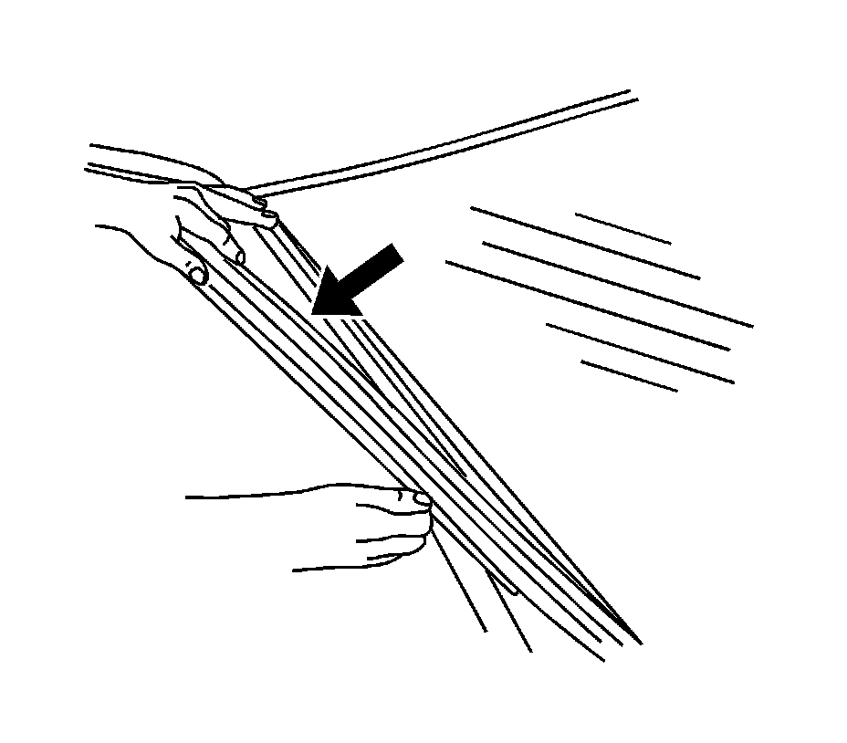
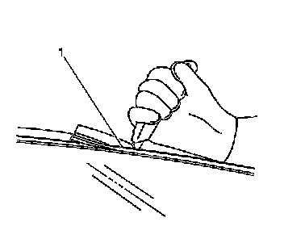
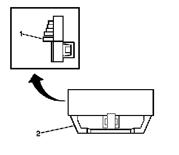
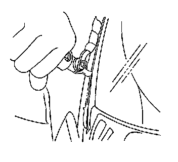
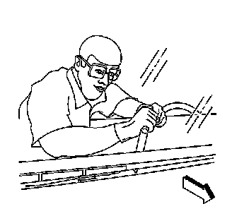
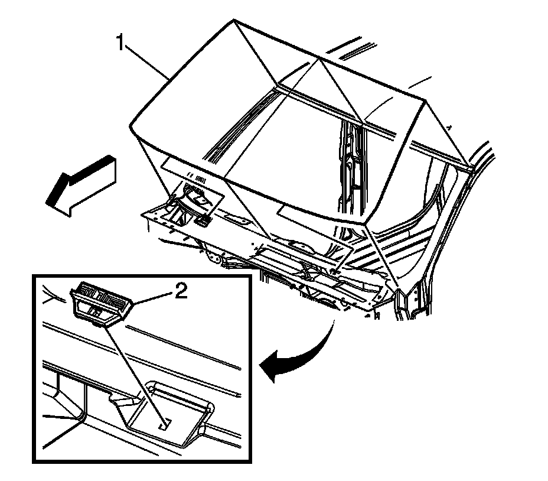

Windshield Replacement
WINDSHIELD REPLACEMENT
TOOLS REQUIRED
- J 24402-A Glass Sealant Cold Knife Remover
- J 39032 Stationary Window Removal Tool
- Urethane Adhesive Kit GM P/N 12346392 or Equivalent
- Isopropyl Alcohol or Equivalent
- Cartridge-type Caulking Gun
- Commercial-type Utility Knife
- Razor Blade Scraper
- Suction Cups
- Plastic Paddle
REMOVAL PROCEDURE
1. CAUTION: Refer to Glass and Sheet Metal Handling Caution.
IMPORTANT: Before cutting out a stationary window, apply a double layer of masking tape around the perimeter of the painted surfaces and the interior trim.
Remove the fixed antenna mast if equipped.
2. Open the hood.
3. Remove the window wiper arms.
4. Remove the air inlet grille panel.
5. Remove the outside moisture sensor.
6. Remove the inside rearview mirror.

7. Reposition the front door sealing weatherstrips (1) in order to access the side reveal molding screws. You do not have to remove the front door sealing weatherstrip completely from the vehicle.

8. CAUTION: Refer to Cracked Window Caution.
Remove the screws from the left and the right sides of window side reveal moldings.

9. Remove the reveal moldings from the vehicle.
10. CAUTION: If broken glass falls into the defroster outlets, it can be blown into the passenger compartment and cause personal injury.
Cover the following parts to protect from broken glass:
1. The upper dash pad
2. The defroster outlets and A/C outlets
3. The seats and the carpeting

11. IMPORTANT: The upper window reveal molding fills the cavities between the body and window. If the reveal molding is stretched or damaged, replace the molding.
Remove the upper window reveal molding (1).

12. IMPORTANT: The window lower supports have molded locks with an urethane adhesive strip on the back side. Once the window lower stops have been removed, the stops must be replaced.
Remove the window lower supports (1) by using a flat-bladed tool, lightly prying upward in the middle until the support releases.

13. IMPORTANT: Keep the cutting edge of the tool against the window in order to properly separate the urethane adhesive from the window.
Use J 24402-A, J 39032, or equivalent in order to remove the window.
- Leave a base of urethane on the pinchweld flange.
- The only suitable lubrication is clear water.

14. Remove the bottom of the window from the urethane adhesive using a long utility knife or similar tool.

15. With the aid of an assistant remove the window (1) from the vehicle.
INSTALLATION PROCEDURE
1. Install a stationary window into the opening.
2. Install the window side reveal moldings to the vehicle.
3. NOTE: Refer to Fastener Notice.
Install the screws to the left and the right sides of the window side reveal moldings.
Tighten the screws to 2 N.m (18 lb in).
4. Install the front door sealing weatherstrips (1) to the retainer (2).
5. Install the cowl air inlet grille panel.
6. Install the window wiper arms.
7. Install the antenna mast, if equipped.
8. Install the outside moisture sensor.
9. Install the inside rearview mirror.
10. Close the hood.
11. Remove the double layer of masking tape around the perimeter of the painted surfaces and the interior trim.